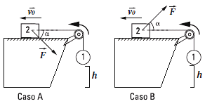
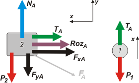
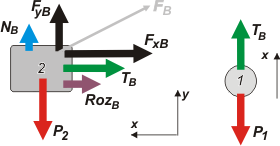

<html>
<head>
<title>DINAMICA, FIS d36, fisica online, ejercicios resueltos</title>
<meta http-equiv="Content-Type" content="text/html; charset=UTF-8">
<meta name="keywords" content="problemas resueltos, ejercicios resueltos, cbc, fisica, biofisica, dinamica, estatica, nomesalen, no me salen, ricardo cabrera" />
<meta name="description" content="Ejercicios y problemas resueltos, y apuntes teóricos de Dinámica y Estática" />
<link rel="stylesheet" href="win_ie.css">
<style type="text/css">
<!--
.Estilo1 {
	color: #FF0000;
	font-weight: bold;
}
.Estilo2 {color: #FF0000}
-->
</style>
</head>

<body bgcolor="#FFFFFF" text="#000000" alink="#000000" leftmargin="0" topmargin="0" marginwidth="0" marginheight="0">
<table align=center width="600" border="0" cellspacing="0" cellpadding="0"> 
  <tr bgcolor="#000000" align="right"> 
<td></td>
  </tr> <tr bgcolor="#BB0000" valign="middle" align="left"> 
<td class="bodytext" height="20"><TABLE WIDTH="100%" BORDER="0" CELLSPACING="0" CELLPADDING="0">
  <TR ALIGN="center" CLASS="menuitem">
    <TD WIDTH="50" height="19" CLASS="menuitem"><A HREF="../../index.html" CLASS="menuitem">&nbsp;<B>home</B>&nbsp;</A></TD>
    <TD WIDTH="5" CLASS="menuitem"><FONT COLOR="#000000">|</FONT></TD>
    <TD width="155" CLASS="menuitem"><strong><a href="index_din.html" class="menuitem">más de dinámica </a> </strong></TD>
    <TD width="17" CLASS="menuitem"><FONT COLOR="#000000">|</FONT></TD>
    <TD width="115" CLASS="menuitem"><strong><a href="../../intro_NMS.html" class="menuitem">otros temas de F&iacute;sica</a></strong></TD>
    <TD width="10" CLASS="menuitem"><FONT COLOR="#000000">|</FONT></TD>
    <TD width="151" CLASS="menuitem"><strong><a href="../../lista_ciruela.html" class="menuitem">lecciones del maestro Ciruela </a></strong></TD>
    <TD width="10" CLASS="menuitem"><FONT COLOR="#000000">|</FONT></TD>
    <TD width="55" CLASS="menuitem"><strong><a href="../../lista_tonterias.html" class="menuitem">tonter&iacute;as </a></strong><a href="../cinematica/index_cin.html"></a><a href="../energia/index_energia.html" class="menuitem"></a></TD>
    <TD WIDTH="10" CLASS="menuitem"><a href="../energia/index_energia.html" class="menuitem"></a><FONT COLOR="#000000">|</FONT></TD>
    <TD WIDTH="22" CLASS="menuitem">&nbsp;<B><FONT FACE="Arial, Helvetica, sans-serif"><A HREF="mailto: ricuti@qi.fcen.uba.ar" CLASS="menuitem">@</A></FONT><A HREF="../../index.html" CLASS="menuitem"></A></B>&nbsp;</TD>
  </TR>
</TABLE></td></tr> <tr> <td class="bodytext" height="11"></td>
</tr> 
<tr align="center"> <td height="1793"> <table width="600" border="0" cellspacing="0" cellpadding="0"> 
<tr class="bodytext"> <td valign="top" width="590" height="1752"> 
<table width="599" border="0" cellspacing="0" cellpadding="0"> <tr> 
  <td height="59" colspan="2" valign="top" bgcolor="#FFDB4A" class="bodytext"><table width="100%" border="0" cellspacing="0" cellpadding="0">
    <tr>
      <td width="3%" height="75">&nbsp;</td>
      <td width="97%"><strong>NO ME SALEN<br>
            <span class="titulograndegris"><strong>PROBLEMAS RESUELTOS DE F&Iacute;SICA DEL CBC<br>
          </strong></span><em><strong>Rozamiento</strong></em></strong></td>
    </tr>
  </table></td>
  <td class="bodytext" rowspan="3" height="73" width="10">&nbsp;</td><td class="bodytext" colspan="2" rowspan="4" valign="top" width="84"> 
<p></p></td></tr>
  <tr>
    <td height="14" colspan="2" valign="top" class="bodytext">&nbsp;</td>
  </tr> 
<tr> <td height="42" colspan="2" valign="top" class="bodytext"><P><strong>d2.36 - Considerar las dos situaciones planteadas
  en la figura, casos A y B. Inicialmente, cuando el
  cuerpo 1 se encuentra a una distancia h del piso, se<br>
  le imprime al sistema una velocidad de módulo
  |<em>v<strong><sub>o</sub></strong></em>| hacia la izquierda.<br>
</strong></P>
    </td>
</tr>  
<tr>
  <td height="94" colspan="2" class="bodytext"><table width="505" height="184" border="0">
    <tr>
      <td height="151" align="center" valign="middle" class="bodytext"><p></p>        </td>
      </tr>
    <tr>
      <td height="27" valign="middle" class="bodytext"><p><strong>Si la intensidad de la fuerza <em>F</em>es la misma en
        ambos casos ¿cuáles de las siguientes afirmaciones
        son ciertas?:<br>
  &nbsp;&nbsp;&nbsp; a) La tensión que ejerce la soga es la misma en
        ambos casos.<br>
  &nbsp;&nbsp;&nbsp; b) La fuerza de contacto entre el bloque 2 y el
        plano es mayor en el caso A que en el caso B.<br>
  &nbsp;&nbsp;&nbsp; c) Las fuerzas de rozamiento entre el bloque 2
        y el plano para ambos casos son iguales.<br>
  &nbsp;&nbsp;&nbsp; d) El sistema se mueve hacia la izquierda frenando.<br>
      &nbsp;&nbsp;&nbsp; </strong><strong>e) La fuerza de rozamiento que actúa sobre el
          bloque 2, debida a su interacción con el plano,
          tiene el sentido del movimiento.<br>
&nbsp;&nbsp;&nbsp; f) El módulo de la aceleración del bloque 2 en
          el caso A es mayor que en caso B.</strong><br>
          </p>        </td>
    </tr>
  </table></td>
  <td width="10" rowspan="12" class="bodytext">&nbsp;</td>
  </tr>
<tr>
  <td height="88" colspan="2" class="bodytext"><p>Uy... No es sencillo responder estas preguntas sin entender bien qué pasa en cada caso. Hagamos lo siguiente, resolvamos lo que podamos de cada uno y tratemos de compararlos.</p>
    <p>Vamos a la primera situaci&oacute;n (caso <strong>A</strong>) y los <a href="AT_DCL.html"><strong>DCL</strong></a> correspondientes. </p></td>
  <td class="bodytext" colspan="2">&nbsp;</td>
</tr>
<tr>
  <td height="281" colspan="2" class="bodytext"><table width="503" height="125" border="0">
    <tr>
      <td width="289" height="121" align="left" valign="middle" class="bodytext"></td>
      <td width="204" align="left" valign="top" class="bodytext"><p>Te habr&aacute;s fijado que los <strong>DCL</strong> que hice no son los verdaderos, si no los &uacute;tiles, es decir ya tienen un <strong>SR</strong> elegido, y que la &uacute;nica fuerza que no coincide con ese <strong>SR</strong> ya est&aacute; descompuesta el las direcciones &uacute;tiles.</p>
        <p>Fijate tambi&eacute;n que el sentido del eje <em><strong>x</strong></em> es coherente entre ambos cuerpos. Ojo.</p>
        <p>Tambi&eacute;n fijate que el sentido del rozamiento (en este caso un deslizamiento) es contrario al sentido del movimiento que indica el enunciado.</p></td>
    </tr>
  </table></td>
  <td class="bodytext" colspan="2">&nbsp;</td>
</tr>
<tr>
  <td height="237" colspan="2" class="bodytext"><p>Hechas todas las aclaraciones, vamos a resolver la primera parte del ejercicio. Este es el <em>set</em> de ecuaciones de Newton. </p>
    <blockquote>
      <p>bloque <strong>2</strong>, eje <em><strong>x</strong></em><strong><span class="Estilo10"><strong><em><strong><strong>&#160;&#160; &#160;&#160; &#160;<strong><em><strong><strong> &#160;&#160; &#160;</strong></strong></em></strong></strong></strong></em></strong>&rarr;<strong><em><strong><strong> &#160;&#160; &#160;&#160; &#160;</strong></strong></em></strong></span></strong>  <em><strong> &mdash; T<sub>A</sub> &mdash; Roz<sub>A</sub>  &mdash; F<sub>xA</sub> = m<sub>2</sub> . a<sub>A</sub><strong><em><strong><strong>&#160;</strong></strong></em></strong></strong></em></p>
        <p>bloque <strong>2</strong>, eje <em><strong>y</strong></em><strong><span class="Estilo10"><strong><em><strong><strong>&#160;&#160; &#160;&#160;<strong><em><strong><strong>&#160; &#160;<strong><em><strong><strong> &#160;&#160; </strong></strong></em></strong></strong></strong></em></strong></strong></strong></em></strong>&rarr;<strong><em><strong><strong> &#160;&#160; &#160;&#160; &#160;</strong></strong></em></strong></span></strong> <em><strong>N<sub>A</sub><sub></sub> &mdash; F<sub>yA </sub>&mdash; P<sub>2</sub><sub></sub> = 0</strong></em></p>
        <p>bola <strong>1</strong>, eje <em><strong>x</strong></em><strong><span class="Estilo10"><strong><em><strong><strong> &#160; &#160;  &#160;<strong><em><strong><strong>&#160;  &#160;</strong></strong></em></strong>  &#160;<strong><em><strong><strong>  &#160;   &#160;</strong></strong></em></strong>  </strong></strong></em></strong>&rarr;<strong><em><strong><strong> &#160;&#160; <strong><em><strong><strong>&#160;&#160; </strong></strong></em></strong> &#160; </strong></strong></em></strong></span></strong><em><strong>T<sub>A</sub> &mdash; P<sub>1</sub></strong></em> <em><strong>= </strong></em><em><strong><strong><em><strong>m<sub>1</sub> . a<sub>A</sub><strong> &#160;</strong></strong></em></strong></strong></em></p>
      </blockquote>
    <p>Adem&aacute;s, sabemos que la fuerza de rozamiento din&aacute;mica, en este caso vale: </p>
    <blockquote>
      <p>rozamiento din.<em><strong></strong></em><strong><span class="Estilo10"><strong><em><strong><strong> &#160; &#160;  &#160;<strong><em><strong><strong>&#160;  &#160;</strong></strong></em></strong><strong><em><strong><strong>&#160;   &#160;</strong></strong></em></strong> </strong></strong></em></strong>&rarr;<strong><em><strong><strong> &#160;&#160; <strong><em><strong><strong>&#160;&#160; </strong></strong></em></strong> &#160;</strong> Roz<sub>A</sub> </strong></em></strong></span></strong><em><strong> = &mu;<strong><em><strong><sub>d </sub></strong></em></strong></strong></em><em><strong><strong><em><strong>. N<sub>A</sub></strong></em></strong></strong></em></p>
        </blockquote>    
    <p>De estas ecuaciones podemos concluir que:</p></td>
  <td colspan="2" class="bodytext">&nbsp;</td>
</tr>

<tr>
  <td height="49" colspan="2" class="bodytext"><table width="505" height="37" border="0">
    <tr>
      <td width="31" height="33" valign="middle" class="bodytext">&nbsp;</td>
      <td width="314" align="center" bordercolor="#FFFFFF" bgcolor="#FFFF99" class="bodytext"><em><strong><strong><em><strong>a<sub>A</sub></strong></em></strong> = (<em><strong><strong><em><strong><em><strong><strong><em><strong><strong><em><strong>&mdash;</strong></em></strong></strong></em></strong></strong></em></strong></em></strong></strong></em> <em><strong>P<strong><em><strong><sub>1 </sub></strong></em></strong><em><strong><strong><em><strong><em><strong><strong><em><strong><strong><em><strong>&mdash;</strong></em></strong></strong></em></strong></strong></em></strong></em></strong></strong></em> </strong><strong>Roz<em><strong><strong><em><strong><strong><em><strong><strong><em><strong><strong><em><strong><sub>A</sub></strong></em></strong></strong></em></strong></strong></em></strong></strong></em></strong></strong></em><strong><em><strong><strong><em><strong><sub> </sub>&mdash; <strong><em><strong><strong><em><strong>F<sub>xA</sub></strong></em></strong></strong></em></strong></strong></em></strong></strong></em></strong></strong></em> ) / (m<sub>1</sub> + <strong><em><strong>m<sub>2</sub></strong></em></strong>)</strong></em></td>
      <td width="146" align="center" class="bodytext">&nbsp;</td>
    </tr>
  </table></td>
  <td class="bodytext" colspan="2">&nbsp;</td>
</tr>
<tr>
  <td height="14" colspan="2" class="bodytext">&nbsp;</td>
  <td colspan="2" align="center" class="epigrafe Estilo1">&nbsp;</td>
</tr>
<tr>
  <td height="47" colspan="2" class="bodytext">Queda clarísimo que se trata de una aceleración negativa a que a frenar al sistema (acordate que si la aceleración tiene sentido contrario que la velocidad es que se esta frenando). Vamos al Caso <strong>B</strong>.</td>
  <td class="bodytext" colspan="2">&nbsp;</td>
</tr>
<tr>
  <td height="36" colspan="2" class="bodytext"><table width="503" height="194" border="0">
    <tr>
      <td width="289" height="190" align="left" valign="middle" class="bodytext"></td>
      <td width="204" align="left" valign="top" class="bodytext"><p>Prestale mucha atenci&oacute;n a las diferencias con el anterior par de <strong>DCL</strong>s.</p>
          <p>El apoyo, <em><strong><strong><em><strong>N<sub>B</sub></strong></em></strong></strong></em>, es menor que antes, ya que ahora hay una fuerza nueva que ahora tira para arriba y que antes tiraba para abajo, <em><strong>F<sub>y</sub></strong></em>.</p>
          <p>Por lo tanto tambi&eacute;n podemos anticipar que entre los rozamientos encontraremos que <strong><strong><em><strong>Roz<sub>A</sub></strong></em></strong></strong> <strong><strong><em><strong>&gt; Roz<sub>B</sub></strong></em></strong></strong>.</p></td>
    </tr>
  </table></td>
  <td class="bodytext" colspan="2">&nbsp;</td>
</tr>
<tr>
  <td height="223" colspan="2" class="bodytext"><p>Las nuevas ecuaciones de Newton son:</p>
    <blockquote>
      <p>bloque <strong>2</strong>, eje <em><strong>x</strong></em><strong><span class="Estilo10"><strong><em><strong><strong>&#160;&#160; &#160;&#160; &#160;<strong><em><strong><strong> &#160;&#160; &#160;</strong></strong></em></strong></strong></strong></em></strong>&rarr;<strong><em><strong><strong> &#160;&#160; &#160;&#160; &#160;</strong></strong></em></strong></span></strong> <em><strong>&mdash; T<sub>B</sub> &mdash;  Roz<sub>B</sub> &mdash; F<sub>xB</sub> = m<sub>2</sub> . a<sub>B</sub><strong><em><strong><strong>&#160;</strong></strong></em></strong></strong></em></p>
      <p>bloque <strong>2</strong>, eje <em><strong>y</strong></em><strong><span class="Estilo10"><strong><em><strong><strong>&#160;&#160; &#160;&#160;<strong><em><strong><strong>&#160; &#160;<strong><em><strong><strong> &#160;&#160; </strong></strong></em></strong></strong></strong></em></strong></strong></strong></em></strong>&rarr;<strong><em><strong><strong> &#160;&#160; &#160;&#160; &#160;</strong></strong></em></strong></span></strong> <em><strong>N<sub>B</sub> + F<sub>yB</sub> &mdash; P<sub>2 </sub><sub></sub>= 0</strong></em></p>
      <p>bola <strong>1</strong>, eje <em><strong>x</strong></em><strong><span class="Estilo10"><strong><em><strong><strong> &#160; &#160;  &#160;<strong><em><strong><strong>&#160;  &#160;</strong></strong></em></strong> &#160;<strong><em><strong><strong> &#160;   &#160;</strong></strong></em></strong> </strong></strong></em></strong>&rarr;<strong><em><strong><strong> &#160;&#160; <strong><em><strong><strong>&#160;&#160; </strong></strong></em></strong> &#160;  </strong>T<sub>B</sub></strong></em></strong></span></strong><em><strong> &mdash; P<sub>1</sub></strong></em> <em><strong>= </strong></em><em><strong><strong><em><strong>m<sub>1</sub> . a<sub>B</sub><strong> &#160;</strong></strong></em></strong></strong></em></p>
    </blockquote>
    <p>Adem&aacute;s, sabemos que la fuerza de rozamiento din&aacute;mica, en este caso vale: </p>
    <blockquote>
      <p>rozamiento din.<em><strong></strong></em><strong><span class="Estilo10"><strong><em><strong><strong> &#160; &#160;  &#160;<strong><em><strong><strong>&#160;  &#160;</strong></strong></em></strong><strong><em><strong><strong>&#160;   &#160;</strong></strong></em></strong> </strong></strong></em></strong>&rarr;<strong><em><strong><strong> &#160;&#160; <strong><em><strong><strong>&#160;&#160; </strong></strong></em></strong> &#160;</strong> Roz<sub>B</sub> </strong></em></strong></span></strong><em><strong> = &mu;<strong><em><strong><sub>d </sub></strong></em></strong></strong></em><em><strong><strong><em><strong>. N<sub>B</sub></strong></em></strong></strong></em></p>
    </blockquote>
    <p>Nuevamente, juntando las cuatro ecuaciones, pod&eacute;s despejar la aceleraci&oacute;n del sistema.</p>    </td>
  <td colspan="2" align="center" class="epigrafe Estilo2"><table width="85" border="0" cellspacing="0" cellpadding="0">
    <tr>
      <td align="center" class="epigrafe">si vos sos de los que se resisten a usar sub&iacute;ndices... est&aacute;s en la lona</td>
    </tr>
  </table>    </td>
</tr>
<tr>
  <td height="46" colspan="2" class="bodytext"><table width="505" height="37" border="0">
    <tr>
      <td width="31" height="33" valign="middle" class="bodytext">&nbsp;</td>
      <td width="314" align="center" bordercolor="#FFFFFF" bgcolor="#FFFF99" class="bodytext"><em><strong><strong><em><strong>a<sub>B </sub></strong></em></strong>= (<em><strong><strong><em><strong><em><strong><strong><em><strong><strong><em><strong>&mdash;</strong></em></strong></strong></em></strong></strong></em></strong></em></strong></strong></em> <em><strong>P<strong><em><strong><sub>1</sub></strong></em></strong><em><strong><strong><em><strong><em><strong><strong><em><strong><strong><em><strong> &mdash;</strong></em></strong></strong></em></strong></strong></em></strong></em></strong></strong></em> </strong><strong>Roz<em><strong><strong><em><strong><strong><em><strong><strong><em><strong><strong><em><strong><sub>B</sub></strong></em></strong></strong></em></strong></strong></em></strong></strong></em></strong></strong></em><strong><em><strong><strong><em><strong> &mdash; <strong><em><strong><strong><em><strong>F<sub>xB</sub></strong></em></strong></strong></em></strong></strong></em></strong></strong></em></strong></strong></em> ) / (m<sub>1</sub> + <strong><em><strong>m<sub>2</sub></strong></em></strong>)</strong></em></td>
      <td width="146" align="center" class="bodytext">&nbsp;</td>
    </tr>
  </table></td>
  <td class="bodytext" colspan="2">&nbsp;</td>
</tr>
<tr>
  <td height="59" colspan="2" class="bodytext"><p>Si comparamos las dos aceleraciones (no te olvides que <em><strong><em><strong><strong><em><strong><strong><em><strong><strong><em><strong><strong><em><strong>F<sub>xA</sub></strong></em></strong></strong></em></strong></strong></em></strong></strong></em></strong></strong></em></strong></em> <strong>=</strong> <em><strong><em><strong><strong><em><strong><strong><em><strong><strong><em><strong><strong><em><strong>F<sub>xB</sub></strong></em></strong></strong></em></strong></strong></em></strong></strong></em></strong></strong></em></strong></em>) podemos concluir que <em><strong><strong><em><strong>|a<sub>A</sub>|<sub> </sub></strong></em></strong></strong></em><strong>&gt;</strong> <strong>|</strong><em><strong><strong><em><strong>a<sub>B</sub>|</strong></em></strong></strong>.</em> O sea, en el caso A el sistema se frena más violentamente, por decirlo de alguna marera. Discutamos las propuestas del ejercicio.</p>    </td>
  <td class="bodytext" colspan="2">&nbsp;</td>
</tr>
<tr>
  <td colspan="2" rowspan="2" class="bodytext"><p><strong>a) La tensión que ejerce la soga es la misma en
    ambos casos.</strong> Falso. Como se ve en las ecuaciones del cuerpo 1 en ambos casos, la tensión depende de la aceleración, y siendo la aceleración diferente para ambos casos, las tensiones deben ser diferentes. (Te dejo a vos deducir cuál es mayor).</p>
    <p><strong>b) La fuerza de contacto entre el bloque 2 y el
        plano es mayor en el caso A que en el caso B.</strong> Verdadero... y sencillo.</p>
    <p><strong>c) Las fuerzas de rozamiento entre el bloque 2
        y el plano para ambos casos son iguales.</strong> Falso. Si cambia la fuerza que comprime las superficies, <em><strong>N</strong></em>, cambia el rozamiento dinámico.</p>
    <p><strong> d) El sistema se mueve hacia la izquierda frenando.
        </strong>Verdadero.</p>
    <p><strong>e) La fuerza de rozamiento que actúa sobre el
      bloque 2, debida a su interacción con el plano,
      tiene el sentido del movimiento.</strong> Falso.</p>
    <p><strong>   f) El módulo de la aceleración del bloque 2 en
      el caso A es mayor que en caso B.</strong> Verdadero.</p>
    <p>En conclusión, las propuestas verdaderas son <strong>b</strong>, <strong>d</strong> y <strong>f</strong>.</p>
    <p>Convengamos en que se podía responder todo sin realizar este análisis fino que desarrollé en esta resolución. Bastaba con entender que al disminuir la fuerza de contacto con el plano la fuerza de rozamiento se hace menor y el sistema frena más &quot;suavemente&quot;. En fin...</p>
    <p>Tenés una ejercicio muy parecido a este <a href="dN2_31.html" target="_blank">acá</a>.</p></td>
  <td width="84" colspan="2" rowspan="2" class="bodytext">&nbsp;</td>
</tr>

<tr>
  <td height="69" class="bodytext">&nbsp;</td>
</tr>

<tr>
  <td height="14" colspan="2" align="left" valign="top" class="bodytext"><p>&nbsp;</p>    </td>
  <td class="bodytext">&nbsp;</td>
  <td width="84" colspan="2" rowspan="3" valign="bottom" class="bodytext"></td>
</tr>
<tr>
  <td height="63" colspan="2" class="bodytext"><strong>DESAFIO:  </strong>&iquest;Para qué sirve la altura <em><strong><strong>h</strong></strong></em> del enunciado? </td>
  <td class="bodytext">&nbsp;</td>
  </tr> 
<tr> <td height="66" colspan="2" align="center" valign="middle" bgcolor="#CCCCCC" class="bodytext"><table width="85%" border="0" cellspacing="0" cellpadding="0">
  <tr>
    <td class="epigrafe">Algunos derechos reservados. 
  Se permite su reproducci&oacute;n citando la fuente. El Comit&eacute; Internacional de Pedadogos Constructivistas ha resuelto prohibir la utilizaci&oacute;n de este material did&aacute;ctico, desde ahora debes hacerlo en forma clandestina. &Uacute;ltima actualizaci&oacute;n 
  jun-16. Buenos Aires, Argentina.</td>
  </tr>
</table>  </td>
  <td class="bodytext" width="10">&nbsp;</td></tr> 
</table></td></tr> </table>
</td>
</tr> 
<tr> <td class="bodytext"></td>
</tr> 
</table>
</body>
</html>
